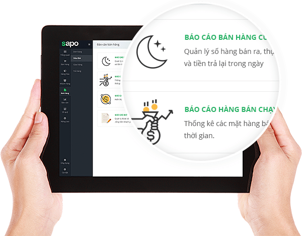

Phần mềm quản lý shop quần áo
By
Thành Nam
Phần mềm quản lý shop quần áo Sapo là giải pháp bán hàng
hiệu quả giải quyết tất cả các khó khăn trong công việc quản lý cửa hàng
quần áo của bạn.
Quản lý hàng hóa, tồn kho
Shop quần áo có hàng nghìn mã hàng với kích cỡ, màu sắc, chất liệu khác
nhau khiến cho việc quản lý gặp nhiều khó khăn, dễ nhầm lẫn, khó ghi nhớ
và tốn nhiều thời gian. Quy trình nhập hàng, xuất hàng và kiểm kê hàng
hoá tồn kho rất phức tạp và hay xảy ra sai sót dẫn đến thường xuyên xảy
ra tình trạng thất thoát hàng hoá.

Với phần mềm quản lý shop thời trang Sapo, hàng hoá được phân chia theo
các thuộc tính khác nhau như kích cỡ, màu sắc, chất liệu… Bạn không cần
phải nhập thủ công thông tin hàng hoá theo từng mục nữa mà chỉ cần nhập
các thuộc tính, phần mềm sẽ tự động điều chỉnh các thông số tương ứng
với mỗi sản phẩm của bạn. Bạn có thể dễ dàng thay đổi thông tin, hình
ảnh, giá cả của sản phẩm bất cứ lúc nào với một thiết bị có kết nối
internet.
Kiểm soát hàng hóa xuất nhập hàng ngày một cách chi tiết chính xác, giúp
bạn dễ dàng kiểm tra tình trạng hàng hóa, quản lý số lượng hàng hóa tồn
kho một cách chính xác đến từng mặt hàng và từng chi nhánh. Nắm bắt dễ
dàng những mặt hàng bán chạy và hàng tồn để có kế hoạch chủ động hơn cho
việc nhập thêm mẫu mã, kiểu dáng mới, kích cỡ phù hợp với từng lô hàng.
Phần mềm quản lý shop quần áo Sapo tích hơp với máy quét mã vạch và cả
tính năng quét mã vạch bằng điện thoại. Hoạt động kiểm kho, cân bằng kho
sẽ tiện lợi hơn rất nhiều. Chỉ cần vài thao tác đơn giản, số lượng hàng
tồn thực tế trong kho sẽ nhanh chóng được cập nhật vào phần mềm và xuất
ra báo các chính xác.
Quản lý nhân viên
Chủ shop quần áo không thưởng xuyên có mặt tài cửa hàng nên việc quản lý
nhân viên không được sát sao. Nhân viên shop quần áo thường không hoàn
toàn dồn hết tâm sức vào công việc do không có ý định gắn bó lâu dài.
Việc quản lý nhân viên không chặt chẽ có thể gây ra nhiều rủi ro như
thất thoát hàng hoá hay gian lận trong giá bán.
Phần mềm quản lý shop quần áo Sapo sẽ lưu lại mọi thao tác làm việc, các
số liệu giao dịch của từng của nhân viên. Bạn có thể theo dõi các đơn
hàng, doanh số bán hàng của mỗi nhân viên theo thời gian thực.
Với chức năng phân quyền cho mỗi nhân viên, bạn có thể thiết lập được
quyền truy cập vào các tính năng trong phần mềm phù hợp với vai trò của
từng vị trí nhân viên nắm giữ. Như vậy bạn có thể hạn chế được tối đa
gian lận và bảo mật thông tin một cách triệt để.
Quản lý khách hàng và khuyến mãi
Shop quần áo của bạn có nhiều khách hàng và mỗi nhân viên phụ trách
những khách hàng khác nhau.
Phần mềm quản lý shop quần áo Sapo lưu trữ thông tin khách hàng chi tiết
theo họ tên, địa chỉ, email, số điện thoại. Với những thông tin này, bạn
có thể thiết lập các chương trình tri ân với những khách hàng thân thiết
bằng hình thức tích điểm. Chỉ cần bạn nhập thông tin khách hàng hoặc số
mã in thẻ, phần mềm sẽ tính tự động cho bạn theo mức điểm được thiết lập
sẵn từ trước.
Bạn cũng có thể tạo các chương trình khuyến mãi trên phần mềm quản lý
shop quần áo Sapo theo từng mặt hàng, từng hóa đơn hoặc cho từng nhóm
khách hàng khác nhau.
Theo dõi báo cáo từ xa
Nếu bạn không thường xuyên có mặt tại cửa hàng, hoặc bạn đang quản lý
một chuỗi các shop quần áo, việc theo dõi tình hình hoạt động kinh doanh
sẽ gặp nhiều khó khăn.

Phần mềm quản lý shop quần áo Sapo giúp bạn theo dõi doanh thu bán hàng
cụ thể từng ngày của từng nhân viên, từng chi nhánh, lịch sử giao dịch
và công nợ của từng khách hàng, danh sách hàng hoá bán chạy, hàng hoá
tồn kho lâu. Bạn có thể xem các báo cáo mọi lúc mọi nơi mà không cần
phải có mặt tại cửa hàng.